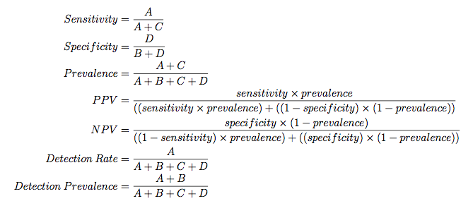

Evaluating Test Sets
A function, postResample, can be used obtain the same
performance measures as generated by train for regression or
classification.
caret also contains several functions that can be used to
describe the performance of classification models. The functions
sensitivity, specificity, posPredValue and
negPredValue can be used to characterize performance where
there are two classes. By default, the first level of the outcome
factor is used to define the "positive" result (i.e. the event of
interest), although this can be changed.
The function confusionMatrix can also be used to summarize
the results of a classification model. Tbhis examples uses objects from the webpage for Model Training and Tuning:
Accuracy Kappa
0.9215686 0.8418605
[1] 0.962963
Confusion Matrix and Statistics
Reference
Prediction M R
M 26 3
R 1 21
Accuracy : 0.9216
95% CI : (0.8112, 0.9782)
No Information Rate : 0.5294
P-Value [Acc > NIR] : 1.407e-09
Kappa : 0.8419
Mcnemar's Test P-Value : 0.6171
Sensitivity : 0.9630
Specificity : 0.8750
Pos Pred Value : 0.8966
Neg Pred Value : 0.9545
Prevalence : 0.5294
Detection Rate : 0.5098
Detection Prevalence : 0.5686
'Positive' Class : M
The "no--information rate" is the largest proportion of the observed classes (there were more actives than inactives in this test set). A hypothesis test is also computed to evaluate whether the overall accuracy rate is greater than the rate of the largest class. Also, the prevalence of the "positive event" is computed from the data (unless passed in as an argument), the detection rate (the rate of true events also predicted to be events) and the detection prevalence (the prevalence of predicted events).
Suppose a 2x2 table with notation

The formulas used here are:

When there are three or more classes, confusionMatrix will
show the confusion matrix and a set of "one-versus-all"
results. For example, in a three class problem, the sensitivity of the
first class is calculated against all the samples in the second and
third classes (and so on).
Also, a resampled estimate of the training set can also be obtained
using confusionMatrix.train. For each resampling iteration,
a confusion matrix is created from the hold-out samples and these
values can be aggregated to diagnose issues with the model fit.
For example:
Cross-Validated (10 fold, repeated 10 times) Confusion Matrix
(entries are percentages of table totals)
Reference
Prediction M R
M 47.5 11.4
R 6.0 35.1
These values are the percentages that hold-out samples landed in the
confusion matrix during resampling. There are several methods for
normalizing these values. See ?confusionMatrix.train for details.
Processing Affy Arrays
For Affymetrix gene chip data, RMA processing (Irizarry, 2003) is a popular method of processing gene expression data. However, for predictive modeling, it has a drawback in that the processing is batch oriented; if an additional sample is collected, the RMA processing must be repeated using all the samples. This is mainly because of two steps in the processing: the quantile normalization process and the calculation of expression. Quantile normalization normalizes the data such that the between--chip distributions have equivalent quantiles and is very effective in improving the quality of the data. It is possible to let the samples in the training set define the reference distribution for normalization. For the expression calculation, a robust method such as a trimmed mean can be used to summarize the probe level data into a single summary metric per sample.
For example: